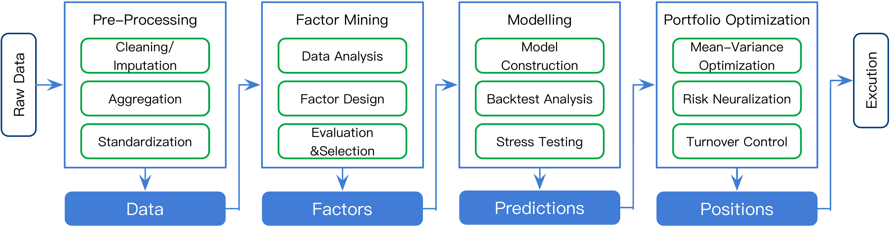

2 投资组合管理
在现代量化投资领域， 多因子模型被广泛认为是构建投资组合的核心方法之一。 本节将简要介绍多因子投资组合模型， 包含多因子模型的理论基础，投资组合的构建过程及其评价体系。
2.1 理论基础
2.1.1 Markowitz投资组合理论
Markowitz (1952) 提出了现代投资组合理论（Morden Portfolio Theory，MPT）， 认为资产的价格仅由收益的期望与方差决定。 对某一资产，若其收益率\(r_i\)出现的概率为\(p_i\)， 那么该资产的期望收益率\(E(r)=\sum_i p_i r_i\)， 其风险由方差描述，\(\sigma_r^2 = \sum_i p_i[r_i-E(r)]^2\)。 % 若该资产的收益符合高斯分布，则其价格仅由\(E(r)\)与\(\sigma_r\)决定。 如果对N个资产进行组合，则有， \[\begin{align} E(r_p)=\sum_{i=1}^N w_i E(r_i)\ ,\quad \sigma^2_p = \sum_{i=1}^N \sum_{j=1}^N w_i w_j \sigma_i \sigma_j \rho_{ij}\ , \end{align}\] 其中\(w_i\)为资产\(i\)的投资权重，且\(\sum_i w_i=1\)， \(\rho_{ij}\)为资产\(i\)与\(j\)的关联系数。 在\(E(r_p)-\sigma_p\)图中， 取\(\sigma_p\)对应的最大\(E(r_p)\)所形成的一条曲线， 称为投资组合的有效边界。 根据有效边界理论，组合资产比组合中任一资产拥有更高的期望收益， 当投资者的风险等级确定后， 有效边界上的任意一点即为该风险下的最优投资组合。 Markowitz模型第一次定量的给出了构建最优投资组合的方法，但也极大的简化了市场逻辑。 Markowitz假设： （1）所有投资者都是风险厌恶者； （2）投资者进行的是单期且静态投资； （3）交易不存在摩擦成本； （4）市场不包含无风险资产等。 此外，Markowitz模型中的资产收益率\(r_i\)及其出现概率\(p_i\)是对历史数据的统计， 造成了实际应用时缺乏稳定性。
2.1.2 资本资产定价模型
Sharpe (1964), Treynor (1962), Lintner (1956), Mossin (1966) 在Markowitz模型的基础上 提出了资本资产定价模型（Capital Asset Pricing Model，CAPM）。 对组合中的任一资产\(i\)，其收益率可以表示为 \(r_i=\alpha_i + \beta_i r_m + \epsilon_i\)， 其中\(\alpha_i\)是一个常数，\(r_m\)为市场收益率， \(\epsilon_i\)是一个独立的随机变量，其期望\(E(\epsilon_i)=0\)。 系数\(\beta_i\)称为灵敏度系数或因子载荷、因子暴露， 描述该证券在市场风险中所占的比重， \[\begin{align} \beta_i=\frac{Cov(i,m)}{\sigma^2_m} = \rho_{im} \frac{\sigma_i}{\sigma_m}\ , \end{align}\] 其中，\(Cov(i,m)\)为证券收益率与市场收益率的协方差， \(\rho_{im}\)为证券收益率与市场收益率的关联系数， \(\sigma_i\)、 \(\sigma_m\) 分别为证券收益率与市场收益率的标准差。 那么，资产\(i\)的期望收益率\(E_i=\alpha_i+\beta_i E_m\)， 方差\(\sigma_i^2=\beta_i^2 \sigma_m^2+\sigma_{\epsilon_i}^2\)。 描述风险的方差被分解成了两部分， \(\beta_i^2 \sigma_m^2\)为与市场相关的系统性风险， \(\sigma_{\epsilon_i}^2\)为仅与资产本身相关的特殊风险。
对N个资产进行组合，并引入市场无风险利率\(r_f\)后，则有， \[\begin{align} E(r_p) &= \alpha_p + \beta_p (E_m-r_f) + r_f\ , \tag{2.1} \\ \sigma_p^2 &= \sum_i^N \sum_j^N w_i w_j \beta_i \beta_j \sigma_m^2 + \sum_i^N w_i^2 \sigma_{\epsilon_i}^2\ . \end{align}\] 其中，\(\alpha_p =\sum_i^N w_i \alpha_i\)，为组合收益中与市场无关的部分， 对于包含全市场的组合\(\sum \alpha\equiv 0\)； \(\beta_p=\sum_i^N w_i \beta_i\)，为组合的因子载荷。 \(\alpha\)与\(\beta\)是评价投资组合构建的重要指标（见§2.3）。 若组合中的资产权重相同，当资产数\(N\to \infty\)时， \(\sum_i w_i^2\sigma_{\epsilon_i}^2\to 0\)，资产的特殊风险被分散， 组合风险只取决于市场风险及组合的因子载荷，\(\sigma_p=|\beta_p| \sigma_m\)。
不同于Markowitz模型，CAPM考虑了单个资产风险与市场风险之间的关系， 将资产风险分解为系统性风险和特殊风险两部分。 CAPM假设： （1）投资者都是理性的且具有一致预期； （2）市场上所有资产可自由交易； （3）市场信息完全公开； （4）无税收无交易成本。
2.1.3 套利定价理论
CAPM模型中，组合的系统性风险由单一市场因子\((E_m-r_f)\)决定。 提出的套利定价理论（Arbitrage Pricing Theory，APT）进一步扩展了CAPM， 将资产定价由单因子模型推广至了多因子模型。 APT假设组合中的任一资产\(i\)的收益率\(r_i=\alpha_i+\sum_j^N \beta_{ji} f_j +\epsilon_i\)， 其中\(f_j\)为第\(j\)个因子的收益率，或称风险溢价。 那么组合的期望收益率， \[\begin{align} E(r_p) = \alpha_p + r_f + \sum_i^N \beta_{pi} E(f_i) \ , \label{eq:apt} \end{align}\] 其中，\(E(f_i)\)为组合中第\(i\)个因子\(f_i\)的期望收益率， \(\beta_{pi}\)为对应的因子载荷， 取决于因子收益率与组合收益率的标准差及关联系数， \(\beta_{pi}=Cov(p,i)/\sigma_i^2=\sigma_i\sigma_p\rho_{pi}\)。
与CAPM相同，套利定价理论假设非系统性风险可以在投资组合中实现分散。 当忽略了非系统性风险后，具有相同因子载荷的资产或组合的期望收益率应该也相同， 否则市场将存在套利机会。 因此，套利定价理论是基于无套利市场得出的结论。 另外，套利定价理论虽然提出了多因子模型的理论框架， 但并未给出具体的风险因子。
2.1.4 FAMA三因子、五因子模型
1992年，FAMA & FRENCH (1992) 提出了著名的三因子模型， 在CAPM的基础上 加入了市值因子（Small [market capitalization] minus Big，SMB） 和账面市值比因子（High [book-to-market ratio] minus Low，HML）。 公式(2.1)变为，
\[\begin{align} E_p= \alpha_p + r_f + \beta_p (E_m-r_f) +s_p\cdot SMB + h_p\cdot HML \ , % + r_s\cdot RMW + c_s\cdot CMA\ , \end{align}\]
其中，\(s_p, h_p\)分别为SMB与HML的因子载荷。 1997年，Carhart (1997) 扩展了Fama三因子模型，加入了动量因子 （[average returns on past] Winners minus Losers，WML）。 2015年，Fama & French (2015) 又提出了五因子模型， 在三因子模型的基础上加入了盈利因子（Robust [profitability] minus Weak，RMW） 和投资因子（[invest] Conservatively minus Aggressively， CMA）。
2.1.5 多因子模型
一般来说，因子模型可以分为三种类型(Connor, 1995)：
- 宏观因子模型（macroeconomic factor model）， 采用宏观经济数据作为因子。例如： 市场风险、价格指数（CPI，PPI，通货膨胀率）、 生产总值（GDP）、货币增长、央行利率、失业率等(N.-F. Chen et al., 1986)。 原始的CAPM属于宏观单因子模型。
- 基本面因子模型（fundamental factor model）， 采用与公司财务有关的基本面指标作为因子。 如所处行业、公司市值、市盈率、市净率等。 FAMA的三因子、五因子模型就是一种基本面因子模型。 常用的还有Barra行业因子模型。
- 统计学因子模型（statistical factor model）。 % 广义上任何与资产特征的相关指标都可以作为潜在的因子。 统计因子模型利用统计学工具， 从数据中挖掘和构造与资产价格相关的因子。 与宏观因子模型和基本面因子模型相比， 基于统计学建立的多因子模型牺牲了模型的可解释性，但带来了更多的灵活性。 APT属于统计学因子模型。
2.2 投资组合构建
利用多因子模型构建投资组合的过程如图2.1， 一般可以分为四个阶段：
数据预处理。 主要包含数据的清理/插补：去除或纠正数据中的错误和缺失值； 数据聚合：将不同来源或不同时间点的数据进行聚合统一分析； 以及数据的标准化：对数据进行规范化处理，使之处于同一量级，便于比较不同数据集；
因子挖掘。 主要包含数据分析：对数据进行统计分析，识别可能影响投资回报的关键变量； 因子设计：基于数据分析结果设计预测未来收益的因子； 以及因子的选择与评估：评估各个因子的有效性，并选择最终用于模型的因子。
建模。 主要包含模型的构建：利用选定的因子构建预测模型，这个模型旨在预测资产的期望回报； 回测分析：通过历史数据测试模型的性能，验证其在过去的表现； 以及压力测试：检验模型在极端市场情况下的表现和稳健性。
组合优化。 主要包含均值-方差优化：通过优化模型来平衡预期收益和风险，寻求最优的资产配比； 风险中性化：对冲不必要的风险，确保投资组合的系统性风险与市场或预定基准一致； 换手控制：管理组合的买卖频率，控制交易成本。

Figure 2.1: 投资组合的构建过程(J. Guo et al., 2023)。
传统的多因子模型是当前量化投资组合构建的重要形式， 但并非所有的量化投资组合管理都仅基于多因子模型。 特别是随着机器学习等技术的发展， 导致投资组合的构建不再拘泥于线性模型。 许多实证研究已经表明，采用机器学习和深度学习模型构建的投资组合， 在某些情况下可以胜过多因子模型 (Conlon et al., 2021; Z. Jiang et al., 2017; Snow, 2019, 2020)。
2.3 评价体系
表2.1列出了评价投资策略的常用指标，及其含义和计算公式。 在进行策略评估时，需要综合考虑各个指标的影响。
| 指标名称 | 含义 | 计算公式 |
|---|---|---|
| Alpha | 组合的超额收益 | \(\begin{aligned} \alpha_p =r_p-r_m \end{aligned}\) |
| Beta | 组合收益相对市场波动 | \(\begin{aligned} \beta_p = \frac{ Cov(p,m)}{\sigma_m^2} =\rho_{pm}\frac{\sigma_p}{\sigma_m} \end{aligned}\) |
| Sharpe ratio(Sharpe, 1966, 1975) | 单位总风险的收益率 | \(\begin{aligned} SR_p = \frac{ r_p -r_f}{ \sigma_p}\end{aligned}\) |
| M2 Measure(Modigliani & Modigliani, 1997) | 考虑杠杆时的收益率 | \(\begin{aligned} M2_p = r_f+ \sigma_m SR_p\end{aligned}\) |
| Treynor ratio(Treynor & Black, 1973) | 单位系统风险的超额收益率 | \(\begin{aligned} TR_p = \frac{ r_p-r_f}{ \beta_p}\end{aligned}\) |
| Information ratio(Goodwin, 1998) | 单位主动风险的超额收益率 | \(\begin{aligned} IR_p = \frac{ r_a-r_f}{ \sigma(r_p-r_f)}\end{aligned}\) |
| Jensen’s Alpha(Jensen, 1968) | 实际收益率与理论收益率之差 | \(\begin{aligned} \alpha_p = r_p - [r_f+\beta_p(r_m-r_f)]\end{aligned}\) |